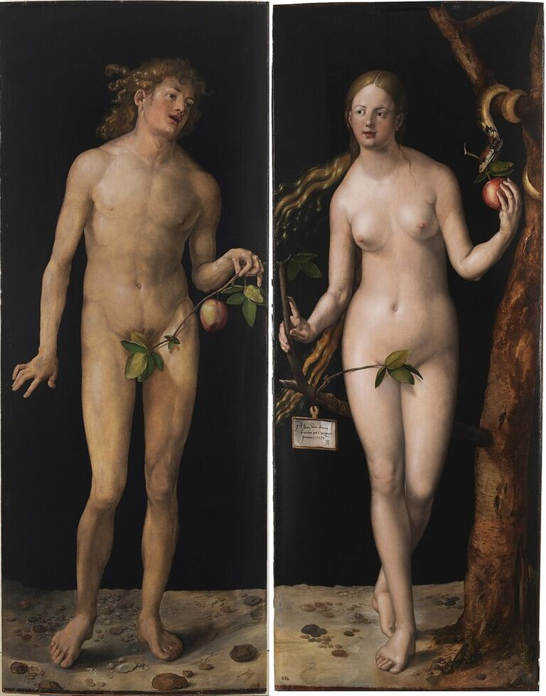
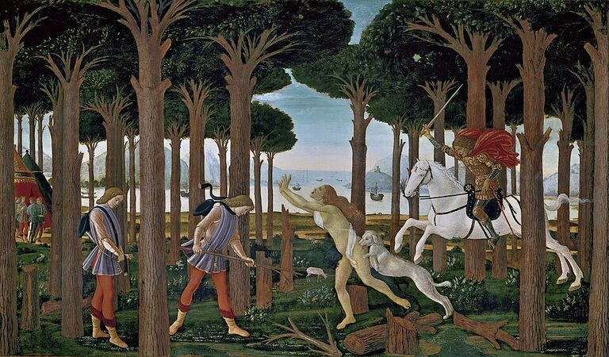
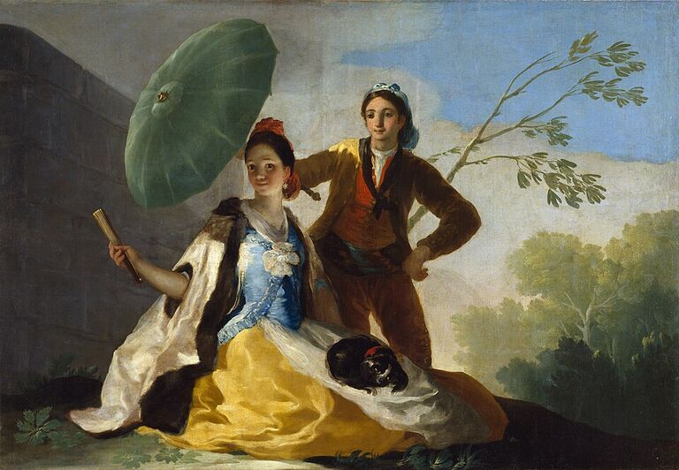
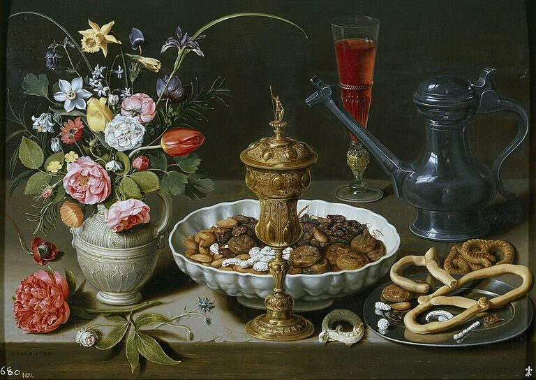
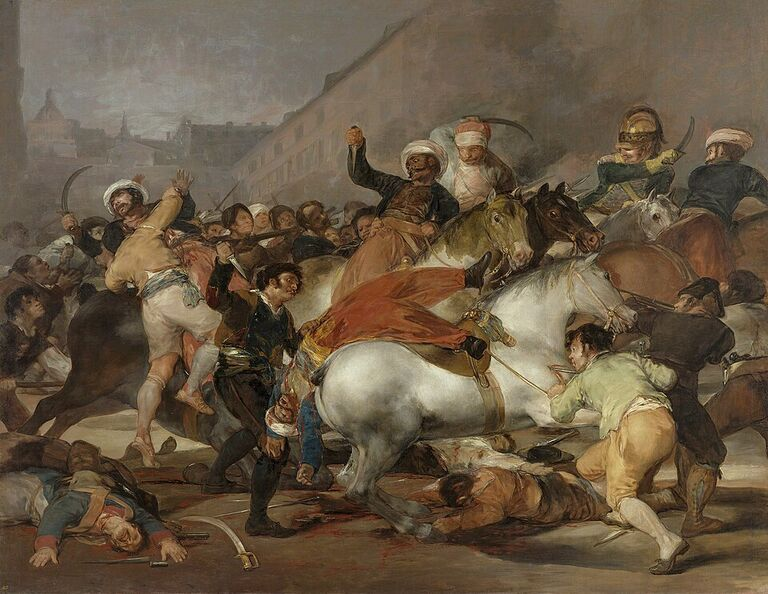
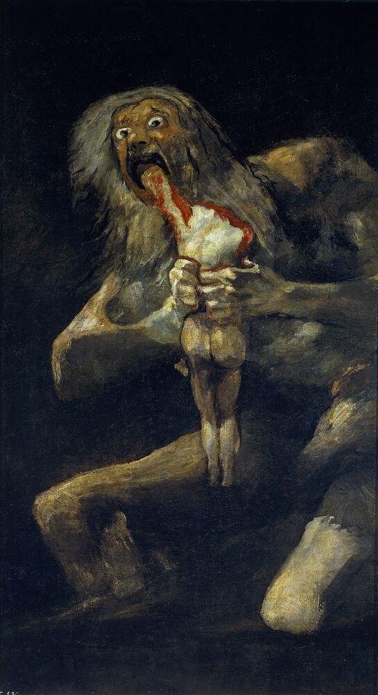
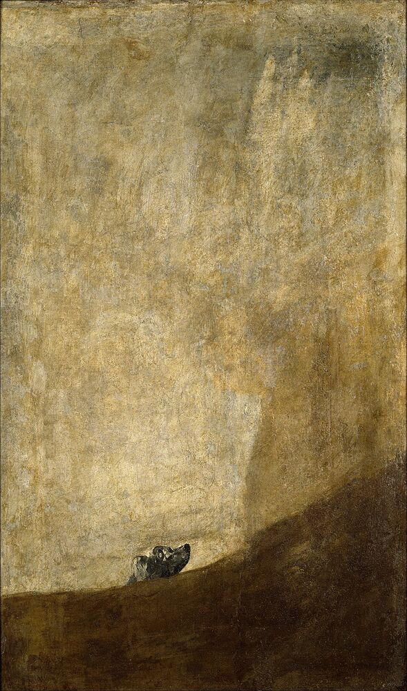
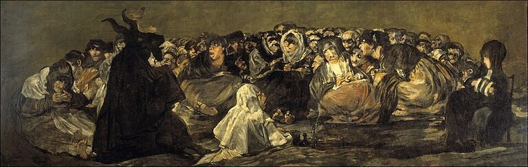

Free, non-profit & open-source. An independent visitor guide — not affiliated with, or endorsed by, the Museo Nacional del Prado. Texts may contain errors, and the Prado rehangs often: the museum's own labels and museodelprado.es are authoritative. Source on GitHub.
Museo del Prado Guide
The permanent collection in
54
masterpieces, room by room
The Prado is the Spanish royal collection, opened to the public in 1819. That single fact explains it: the kings bought what they loved, in depth — Bosch for Philip II, Titian for Charles V and Philip II, Rubens and Velázquez for Philip IV — and so a handful of painters are here as nowhere else on earth. The guide follows one walkable route from the oldest pictures to Goya, with a room number on every card.
One idea to carry through: painters looking at painters. Rubens copies Titian in the palace; Velázquez answers both; Goya puts himself in a royal portrait the way Velázquez did in Las Meninas. The collection is a conversation held across three centuries inside one building.
Hours Mon–Sat 10:00–20:00 · Sundays & holidays 10:00–19:00 · closed 1 Jan, 1 May, 25 Dec
Tickets
€15 general, €7.50 reduced; free for everyone in the last two hours (Monday to Saturday 18:00–20:00, Sundays and holidays 17:00–19:00), and always free for under-18s. Checked 24 Nov 2026 — confirm on museodelprado.es.
Where Paseo del Prado · Metro Banco de España (L2) or Estación del Arte (L1)
Plan Take the free paper plan at the entrance — the rooms below use its numbers. Floor 0 is the ground floor, Floor 1 the main floor, Floor 2 the top.
Rules No photography in the collection galleries; large bags and backpacks go to the free cloakroom.
The Prado has no fixed circuit. This route starts on Floor 0 with the oldest pictures, climbs through the main floor and the top floor, and ends back on Floor 0 with Goya's Black Paintings. If a room is packed, skip ahead and come back.
1 of 13 Floor 0 · Rooms 56A, 58
Flemish Primitives & Bosch
Spain's Habsburg kings ruled the Low Countries for a century and a half, and Castile collected Flemish painting long before it collected Italian. That is why the finest Bosch collection on earth hangs in Madrid rather than in 's-Hertogenbosch: Philip II hunted his pictures down with a collector's obsession and hung them at El Escorial. Start with Rogier van der Weyden in Room 58, the painting every Netherlandish artist of the next century measured himself against, then step into the dim Bosch room, 56A.
The painting that set the standard for a century of Netherlandish art. Rogier packed ten nearly life-size figures into a shallow gilded box, as if a carved and painted altarpiece had come to life, and then made grief itself the subject. The Virgin faints in exactly the curve of her son's body: compassio, the idea that she lived his Passion with him. It was painted for the Crossbowmen's Guild of Leuven; Mary of Hungary, regent of the Netherlands, wanted it so badly that she obtained it in exchange for a copy and an organ, and her nephew Philip II hung it at El Escorial.
Look for the tiny crossbows hidden in the gilded tracery of the top corners — the guild's signature — and the tears, painted as glassy beads, on almost every face.
Nobody knows exactly what this painting means, and that is half its hold. Read it left to right: God presents Eve to Adam in a paradise where animals already prey on one another; the central panel fills with naked men and women gorging on giant fruit, riding animals in circles, sealed into bubbles and shells; then the night of the right wing, a hell where musical instruments have become instruments of torture. Most scholars read it as a warning about a world given over to lust. It was recorded in 1517 in the Nassau palace in Brussels; Philip II bought it in 1591 and sent it to El Escorial.
Look for in the right wing, a sinner pinned under a lute with a line of music written on his buttocks (it has been transcribed and performed), and the 'tree-man', an egg-shell body on tree-trunk legs, whose face turns back to look at you.
A Flemish proverb said the world is a haycart and everyone grabs what they can. Bosch paints it literally: a mountain of hay rolls across the centre while peasants, nuns, a fat friar and every rank of society climb, stab and trample each other to pull at it. The pope and the emperor ride calmly behind. Nobody notices what is drawing the cart — a team of hybrid demons heading straight into the right wing, where hell is still under construction. Read the left wing first: the fall of the rebel angels, Eve's creation, the Fall, the expulsion. Sin, then its consequence.
Look for on top of the hay, a pair of lovers making music between a praying angel and a blue devil piping a tune — and Christ in the clouds above, arms raised, ignored by everyone.
Made to be looked down into, the way God looks down at you. The centre is a giant eye with the risen Christ in its pupil and the warning 'Cave, cave, Dominus videt' — beware, beware, the Lord sees. Around the iris, the seven deadly sins as scenes of ordinary Flemish life: a glutton gorging, a judge taking a bribe from one party while hearing the other, a woman admiring herself in a mirror held up by a devil. The corners show the Four Last Things: death, judgement, heaven and hell. Philip II kept it in his private apartments at El Escorial. Its attribution has been argued over; the Prado accepts it as Bosch, and it is signed.
Look for Pride (Superbia): the woman admiring her headdress has not noticed who is holding up her mirror.
2 of 13 Floor 0 · Rooms 55A, 55B
Bruegel, Patinir & Dürer
Two exits from Bosch's world. In Flanders, landscape stops being a backdrop and becomes the subject: Patinir invents the 'world landscape' seen from a bird's height, and Bruegel fills it with everybody at once. In Germany, Dürer goes to Italy twice and comes home with proportion, perspective and a new idea of what an artist is. Both arrived in Madrid through Habsburg collecting — Dürer's Adam and Eve by way of a Swedish army's loot.
The medieval theme of death the leveller, painted as total war. Skeleton armies sweep across a burnt landscape, herd the living into a coffin-shaped trap and ring a bell for the dead; nobody escapes, from king to pilgrim. Bruegel had looked hard at Bosch, but where Bosch's hell is fantasy, this is closer to reportage of the Low Countries in the 1560s, on the eve of their revolt against Spain: gallows, wheels for breaking the condemned, burning ships. It belonged to Elisabeth Farnese, Philip V's queen, and was cleaned in 2018, which brought back its colour.
Look for the bottom right corner: two lovers sing from a part-book, oblivious, while a skeleton plays along behind them — and nearby a jester hides under the table.
Dürer called Patinir 'the good landscape painter', and this is why: the subject is a tiny boat, and the real subject is the world. Charon ferries a soul across the river of the dead. On the left bank lies Paradise, bright, with angels — but it is reached by a narrow, difficult way. On the right, the gate of Hell, guarded by the three-headed dog Cerberus, looks easy to land at. Watch where the soul is looking. Christian choice is set in a pagan myth, painted from a bird's height, in the blue distances Patinir made his trademark.
Look for the soul in the boat: he is turned towards the inviting bank on the right.
At twenty-six Dürer paints himself not as a craftsman — which is what a painter was in Nuremberg — but as a gentleman, in expensive clothes and kid gloves, framed like a nobleman. The inscription says: 'I painted it according to my likeness. I was 26 years old.' He had already been to Venice, where painters were treated as intellectuals; this is a manifesto in the form of a portrait. The city of Nuremberg later gave it to the Earl of Arundel for Charles I of England, and at the sale of the executed king's collection it was bought for Philip IV.
Look for the gloves — useless to a man who works with his hands — and the Alpine view through the window, a memory of the crossing to Italy.

Room 55B
Adam and Eve
Albrecht Dürer, 1507
Oil on panel, two panels · P002177–8 · museum page
The first life-size nudes in German painting, made just after Dürer's second stay in Venice. In his famous 1504 engraving of the same subject he had built Adam and Eve with ruler and compass, from ideal proportions; here, after Venice, they are slimmer, lighter and moving — almost dancing towards each other across the gap between the panels. The pair went to Emperor Rudolf II in Prague, were taken by the Swedish army when it sacked the city in 1648, and were given by Queen Christina of Sweden to Philip IV in 1654.
Look for the little tablet hanging from the branch beside Eve: Dürer's signature, 'Albrecht Dürer, German, made this 1507 years after the Virgin gave birth'.
3 of 13 Floor 0 · Rooms 49, 55, 56B
Italian Renaissance
Small rooms, large stakes. The Italian fifteenth century reached Madrid late and by odd routes — a convent sale, a king's execution in London, a Catalan politician's bequest — so what the Prado has is few pictures, each first-rate. Room 56B holds the Quattrocento; Room 49 is given to Raphael's late work in Rome. On the way, in Room 55, the woman who painted Philip II.
Painted by a Dominican friar for his own convent church of San Domenico in Fiesole, above Florence, at the moment Florentine painting discovered perspective. The portico is measured space; the gold and the stars on the blue vault are still medieval heaven. The key is the left edge: Adam and Eve being expelled from Eden — the Fall that the Annunciation, in the centre, begins to undo. The convent sold it in 1611; it reached Spain as a gift to the Duke of Lerma and spent two and a half centuries in a Madrid convent before the Prado. It was restored for the museum's great Fra Angelico exhibition in 2019.
Look for the thin golden ray that leaves God's hands at top left, crosses the expulsion and ends at Mary, carrying the dove.
Small, and a manifesto of the new perspective: the tiled floor and the pilasters drive the eye to the window and out across a real landscape. Mantegna painted it for the chapel of the Gonzaga in their castle at Mantua. The panel was cut down — its upper third, with Christ receiving his mother's soul, is in Ferrara. The Gonzaga sold their collection to Charles I of England; after his execution Spain bought this at the sale of his pictures, and it hung in Philip IV's palace.
Look for the view through the window: not Jerusalem but the lakes of Mantua and the long bridge of San Giorgio, which Mantegna could see from the castle.

Room 56B
The Story of Nastagio degli Onesti
Sandro Botticelli, 1483
Tempera on panel, three panels · P002838–40 · museum page
A wedding present with a dark story. In Boccaccio's Decameron, Nastagio, rejected by the woman he loves, sees in the pine forest of Ravenna a ghostly knight hunting a naked woman with dogs, killing her and feeding her heart to them — her punishment, repeated every Friday, for scorning him. Nastagio invites his beloved to a banquet on the spot; she watches, and agrees to marry him. Botticelli's workshop painted the series in 1483 for a Florentine wedding probably arranged by Lorenzo de' Medici, to be set into the walls of the couple's bedroom. The three panels came to the Prado as a gift from the Catalan politician Francesc Cambó.
Look for the same figures reappearing several times in one panel — the story told as a strip — and, in the banquet panel, the families' coats of arms hung on the trees.
Raphael painted it in Rome while he was decorating the Pope's rooms in the Vatican, and nobody knows who the sitter is — several cardinals of Julius II's court have been proposed. It hardly matters: this is one of the Renaissance's great studies of intelligence and reserve, a long nose, closed lips, an alert eye. The means are almost nothing, which is the lesson Titian and Velázquez would later learn: a red, a white, a dark ground, a face.
Look for how little there is — no setting, no attributes — and how the red changes from scarlet in the light to near-black in the folds.
For centuries this was catalogued as the work of a male court painter; the Prado now gives it back to Sofonisba Anguissola, the Cremonese noblewoman who came to the Spanish court in 1559 as painter and lady-in-waiting to Philip II's third wife, Elisabeth of Valois. It is the image of Philip most people know: the bureaucrat-king of El Escorial in sober black, the rosary in his hand. X-rays show she changed her mind as she worked, replacing a voluminous cape with a light silk one.
Look for the restraint — black on black, one white ruff — that became the uniform of the Spanish court for a century; Velázquez's sitters still wear it.
4 of 13 Floor 1 · Rooms 25, 27, 42, 44
Titian & Venice
Titian was the Habsburgs' painter the way Velázquez would later be Philip IV's: Charles V made him a count palatine, and Philip II commissioned from him the poesie, mythologies painted as poems for the eye. Spain ended up owning more Titians than anyone, and the next century of painting in Madrid was learned in front of them — Rubens copied them in the palace, and Velázquez lived with them. The great Titian portrait is in the Central Gallery; the mythologies are in Rooms 42 and 44.
In April 1547 Charles V defeated the Protestant princes of the Schmalkaldic League at Mühlberg on the Elbe. Titian, summoned to Augsburg, painted the victory without a battle: one man, one horse, a lance, at dusk, alone. It is an image of the Christian knight rather than of a gouty, exhausted 47-year-old, and it became the model for every royal equestrian portrait afterwards — Velázquez's included. It was damaged in the fire at the Pardo palace in 1604 and repaired.
Look for the armour: it survives, and is displayed in the Royal Armoury at the Royal Palace, about half an hour's walk from here.
On the island of Andros, the ancient writer Philostratus said, Bacchus made a river run with wine. Titian painted its inhabitants for the 'alabaster room' of Duke Alfonso d'Este in Ferrara, alongside Bellini and his own Bacchus and Ariadne, now in London. The canvases were carried off to Rome in 1598 and reached Philip IV in the 1630s. In Madrid they became a school: Rubens copied this one in 1628–29, and Velázquez's Triumph of Bacchus, a few rooms away, answers it.
Look for the sheet of music in the foreground — a French canon, 'Qui boyt et ne reboyt, il ne scet que boyre soit' (he who drinks and does not drink again does not know what drinking is), attributed to Adrian Willaert, chapel master of St Mark's.
Titian's workshop made several versions of this composition, and the Prado owns two. The usual reading is philosophical rather than merely erotic: Renaissance Neoplatonists argued over which sense leads the soul to beauty, sight or hearing, and here the musician is caught between them. Behind, a formal avenue runs to a fountain and a couple strolls — the world going on while the young man forgets his instrument.
Look for the organist's hands, still on the keys, while his body twists round to look.
Danaë's father locked her in a tower; Jupiter entered as a shower of gold. Titian's first Danaë for Philip II opened the series of poesie in 1553 — that canvas is now at Apsley House in London, captured with Joseph Bonaparte's baggage after the battle of Vitoria in 1813. This later version adds the old nurse, who turns divine love into cash and holds out her apron for the coins. Look at the paint: late Titian, applied with the brush and, it was said, with his fingers.
Look for the two women's faces — one upturned and dissolving into the light, one sharp and greedy — and the small dog asleep at the foot of the bed.
More than five metres wide, painted by the young Tintoretto for a side wall of the Venetian church of San Marcuola. Christ is not in the centre: he kneels at the far right, washing Peter's feet before the Last Supper, while the middle of the picture is an empty chequered floor running back to a stage set of classical buildings and a canal — a lesson in perspective as theatre. Charles I of England owned it; Philip IV bought it at the sale of his collection and sent it to the sacristy of El Escorial.
Look for the apostles' comic struggle with their hose and boots on the left — and try the picture from an angle, as it was first seen, as well as head-on.
5 of 13 Floor 1 · Rooms 8B, 9B
El Greco
Domenikos Theotokopoulos trained as an icon painter in Venetian Crete, studied Titian in Venice and Michelangelo in Rome, and came to Spain in the 1570s hoping to work at El Escorial. Philip II disliked the altarpiece he ordered from him, so the Greek stayed in Toledo for the rest of his life and became the most original painter of the age. These rooms run from his first Toledo commission to the picture he painted for his own tomb.
The emblem of the Spanish gentleman, painted by a Greek. The sitter is unknown; romantics wanted him to be Cervantes, and the Prado considers the Marquis of Montemayor, a Toledo notable, the most convincing candidate. The gesture may be an oath, a declaration of honour, or simply sincerity. An early Toledo portrait, almost severe — El Greco's mannerisms are reserved for one long hand. Its cleaning in 1996 lightened the background and caused a public row.
Look for the middle and ring fingers pressed together — an El Greco signature — and the gold of the sword hilt at the edge, the only hint of rank.
Painted for the top of the high altarpiece of Santo Domingo el Antiguo in Toledo, El Greco's first big Spanish commission. The ingredients are borrowed: the composition from a Dürer woodcut, the heavy, muscular Christ from Michelangelo, whose work El Greco had studied — and criticised — in Rome. But the colours, acid yellow, pink and green, are already his own, and so is the weightlessness of the angels. It was meant to be seen from far below.
Look for the Father's face: not triumphant but grieving, bent over the body like a mourner.
Thirty-five years after The Trinity, and painted for El Greco's own burial chapel in the same Toledo convent. He died in 1614. Everything solid has gone: bodies stretch and flicker like flames, space is a dark well, and the only light source is the Child. This is late El Greco at his most extreme — the style that baffled the eighteenth century and that Picasso, Cézanne and the German Expressionists rediscovered.
Look for the light: it comes from the Child himself and catches the faces from below, like a candle held up in the dark.
6 of 13 Floor 1 · Rooms 7A, 9, 10A, 16
Caravaggio & the Spanish Golden Age
Naples was a Spanish possession, and through it Caravaggio's discovery — real bodies, raking light, darkness everywhere else — reached Spain and became its seventeenth-century style. Ribera, a Valencian, painted it in Naples; Zurbarán turned it into silence in Seville; Murillo softened it into sweetness. Velázquez, in the next rooms, started there too.
No victory pose: David is a working boy, bent over the job of tying the giant's hair so the head can be carried. The light hits his shoulder and Goliath's face; everything else falls into black. This is the method that reached Spain through Spanish Naples and shaped a century of Spanish painting. A restoration finished in 2023 removed yellowed varnish and brought back the original contrast of light and dark, revealing details that had been hidden.
Look for Goliath's open mouth and the diagonal from his head up David's arm to his shoulder — the whole picture is one line.
Ribera, a Valencian who spent his whole career in Spanish Naples, painted this very probably for Philip IV, whose name-saint this is. For a long time it was called a Bartholomew; it shows the apostle Philip being hoisted onto the cross. It is less a scene of agony than of labour: three men strain at ropes and timber, the saint's body is heavy, real, a working weight. Velázquez, who met Ribera in Naples, learned from exactly this kind of flesh.
Look for the saint's face, turned up into the light, and the ordinary bystanders at left who have stopped to watch.
Four pots in a row, and one of the most silent pictures ever painted. Zurbarán, the painter of Seville's monks, gives a pewter plate and cup, a white water jug from Triana, a red clay vase from the Americas and another jar the same grave attention he gives his saints. Many see the row as an offering on an altar; others simply as a study of materials — metal, glazed and unglazed clay — in a single light. It came to the Prado in 1940 with the Cambó bequest; a near-identical version is in Barcelona.
Look for the shadows and reflections between the objects — each one touches its neighbour only through the light.
The Seville of Murillo was the stronghold of the cult of the Immaculate Conception, and this is its definitive image: a young girl in white and blue, on the moon, carried by a cloud of child-angels. It also has the most dramatic biography in the room. It hung in Seville's Hospital de los Venerables until Napoleon's Marshal Soult took it in 1813; the Louvre bought it from his heirs in 1852 for what was then the highest price ever paid for a painting; it came back to Spain in 1941 in an exchange with France.
Look for the cherubs at her feet — each one a real Sevillian child, painted from life.
7 of 13 Floor 1 · Rooms 10, 11, 14
Velázquez I: Seville to Rome
Diego Velázquez (1599–1660) arrived in Madrid from Seville in 1623, was made Philip IV's painter at twenty-four and never left the king's service. Nearly all his major work stayed in the royal collection, which is why the Prado has around fifty of his paintings and every other museum has crumbs. This first group runs from his Madrid debut through his first trip to Italy (1629–31), when he looked hard at Titian and at the ancient statues.
Myth meets tavern. The god of wine, pale and soft, crowns a kneeling soldier, while real men from the streets of Madrid — leathery, unshaven, delighted — crowd in with their bowls. Madrid has always called it Los Borrachos, 'the drunks'. Velázquez painted it just before his first trip to Italy, when Rubens was in Madrid; you can read it as a joke on mythology, or as the opposite: the gods' gift brought down to the poor, who need it most.
Look for the drinker in the hat grinning straight out at you, bowl in hand — the real host of the picture.
Painted in Rome, where Velázquez spent a year drawing ancient statues, and you can see it in the workmen's classical bodies. The god Apollo, glowing, has just walked into the forge to tell Vulcan that his wife Venus is sleeping with Mars. The picture is the instant after the words: the hammering has stopped, and the news travels from face to face around the room. Myth as a scene of everyday humiliation.
Look for Vulcan's face, and then each workman's in turn — every reaction is different.
Tiny, and centuries ahead of itself. In Rome Velázquez stayed at the Villa Medici, and this is one of two small views of its gardens — the other, with a statue of Ariadne, hangs beside it — painted from life, in the open air, at a time when landscape was assembled in the studio. Quick strokes, broken light on stone and leaves, nothing heroic: a boarded-up arch, a sheet hung over a balustrade, two men talking. Its date is debated — this trip or his second Roman stay in 1649–50 — but no one disputes its freshness.
Look for the brushwork from close up, then from five steps back: the sketch turns into air.
No landscape, no mourners, no drama: a body of classical beauty against a flat dark ground, the head fallen forward and half hidden by its own hair. It was painted for the Benedictine convent of San Plácido in Madrid and is an act of complete stillness. Velázquez follows the rules of his teacher and father-in-law Francisco Pacheco: four nails, not three, and the feet resting side by side. The philosopher Miguel de Unamuno wrote a book-length poem about it, El Cristo de Velázquez.
Look for the shadow of the body on the cross, and the hair: legend says Velázquez covered half the face because he could not finish it.
8 of 13 Floor 1 · Rooms 9A, 12, 15A
Velázquez II: Painter to the King
From the 1630s Velázquez painted for the king's new palace of the Buen Retiro and his hunting lodges, and rose as a courtier until he was made a Knight of Santiago in 1659, a year before his death. Room 12, at the heart of the building, is the Prado's shrine: Las Meninas, with princes, jesters and philosophers around it.
In June 1625 the Dutch fortress of Breda surrendered to Spanish troops under the Genoese general Ambrogio Spinola. Ten years later Velázquez painted the handover of the keys for the Hall of Realms of Philip IV's new Buen Retiro palace, among twelve victories of the reign. He makes it a scene of courtesy: Justin of Nassau begins to kneel and Spinola stops him with a hand on his shoulder. Behind the victors, the upright lances that give the picture its Spanish name; behind the defeated, a scrappy few pikes. The Hall of Realms still stands, a few minutes' walk from here, being converted into Prado galleries.
Look for Spinola's hand on his enemy's shoulder — and the man in the hat at the far right edge, often said to be Velázquez himself.
Philip IV's heir at about five, made for the Hall of Realms, where it hung above a door between the equestrian portraits of his parents. That explains the strange pony: seen from below, the barrel belly that looks swollen at eye level becomes the right shape. Behind him, the Guadarrama mountains north of Madrid, painted with a lightness that looks modern. The prince died at sixteen in 1646, and with him the Habsburgs' best hope; the dynasty ended with his sickly half-brother.
Look for crouch a little and look up at the horse, as the court did.
Painted with its pair, Menippus, for the king's hunting lodge, the Torre de la Parada. The ancient fabulist, a former slave, is shown as a poor man of Madrid, in a worn coat, with the face of someone who has seen everything and expects nothing — a philosopher as a porter. Velázquez painted the court's jesters and dwarfs with the same seriousness; the hierarchy of dignity in his work is never the hierarchy of rank.
Look for the face: heavy-lidded, tired, ironic — and the bucket and hide at his feet, props whose meaning is still argued over.
The god of war, off duty and deflated: naked but for a helmet, moustached like a Spanish soldier, sitting on the edge of a bed with his armour on the floor. Some see a melancholy on the state of a Spain worn down by endless war; others the morning after his affair with Venus — the story you just saw announced in Vulcan's Forge. Painted for the same hunting lodge as Aesop, and one of very few male nudes in Velázquez's work.
Look for the shadow of the helmet across his eyes: the god cannot be seen to be looking at anything.
For a long time read as a genre scene in the royal tapestry works, it is a myth hidden in plain sight. In the bright alcove at the back, Pallas Athena, helmeted, confronts the weaver Arachne, who dared to challenge the goddess and was turned into a spider. The tapestry behind them reproduces Titian's Rape of Europa, which hung in Philip IV's palace — a painting about art, rivalry and copying, made in the same years as Las Meninas. The canvas was enlarged in the eighteenth century; since 2021 its frame masks those additions.
Look for the spinning wheel at left: Velázquez painted it moving — the spokes are a blur of light.
Five-year-old Infanta Margarita in the Alcázar palace, with her maids of honour (the meninas), a chaperone and a guard, two court dwarfs, Mari Bárbola and Nicolasito, and a mastiff; in the doorway the queen's chamberlain; at the canvas, Velázquez himself. Who is he painting? The mirror at the back shows Philip IV and Queen Mariana, standing where you stand. It is a picture about seeing and being seen, about painting's place at court, and it has been argued over since Luca Giordano called it 'the theology of painting'. The red cross of Santiago on Velázquez's chest was added after he was knighted in 1659 — legend says by the king.
Look for the mirror at the back — then step back to the middle of the room and notice that you are standing where the king and queen stood.
9 of 13 Floor 1 · Rooms 16B, 28, 29
Rubens & Van Dyck
The Prado has the largest Rubens collection in the world, because Philip IV was his greatest patron and bought heavily from his estate after his death in 1640. Rubens was a diplomat as well as a painter; he spent eight months in Madrid in 1628–29, copied the royal Titians and met the young Velázquez. Flesh, colour, abundance — and a lesson the young Velázquez took.
Van Dyck's only double portrait of himself with somebody else. Endymion Porter, in silvery satin, was a courtier of Charles I and one of the agents who bought pictures for the king's collection — a patron and a friend. Van Dyck, in black, slight and elegant, sits just behind him. An oval, an embrace in all but touch, and a record of the art world of the 1630s: the dealer-courtier and the painter who taught the English aristocracy how to look.
Look for Van Dyck's hand resting on the rock beside his friend — stone, an old emblem of steadfastness.
Two paintings in one. Rubens painted it in 1609 for Antwerp's town hall, where the truce with Spain was negotiated; it was soon given to a Spanish envoy and reached the royal collection. When Rubens came to Madrid in 1628–29 and found it in the palace, he reworked it, adding strips of canvas at the top and right and repainting much of it in his mature manner. A painter correcting his younger self, twenty years on, in his client's house.
Look for the rider in a gold chain at the right edge, added when Rubens enlarged the canvas: usually identified as Rubens himself.
A painting Rubens made for himself and kept until he died; Philip IV bought it from his estate. The Graces — the companions of Venus, givers of charm and delight — stand in the ancient interlocking pose, but these bodies are not ancient: they are Flemish, soft, dimpled, alive. The Grace on the left is generally thought to have the features of Helena Fourment, the 16-year-old Rubens married in 1630 at fifty-three.
Look for the hands and the gaze — three women connected only through touch and looking — and the thin veil that winds between them.
A celebration of his late marriage to Helena Fourment, painted for himself and bought by Philip IV after his death. Couples in fashionable silk court each other in a garden beside an architecture like the portico of Rubens's own house in Antwerp; cupids push a hesitant young woman towards the group. The Prado points out its kinship with Titian's bacchanals in Room 42: the same idea of love as a pagan feast, now in contemporary dress. It is the ancestor of Watteau's fêtes galantes a century later.
Look for the stone statue of Venus on the right, water spouting from her breasts into the fountain.
10 of 13 Floor 1 · Rooms 32, 38
Goya at Court
Francisco de Goya (1746–1828) rose from tapestry designer to First Court Painter in 1799, deaf since an illness in 1792–93, and the Prado holds the largest collection of his work anywhere. Upstairs here: the official Goya, painting a royal family and, for the king's chief minister, the most notorious nude in Spanish art. His war pictures and the Black Paintings are on Floor 0.
Goya's first major work as First Court Painter, painted at Aranjuez and Madrid in 1800. Thirteen members of the royal family stand in a frieze, glittering with silk, sashes and decorations; Queen María Luisa takes the centre, the king stands slightly apart. Was it a satire? Almost certainly not — the family seem to have been pleased — and yet the faces are so unflattering that a quip often attributed to Théophile Gautier compared them to the corner grocer and his wife after winning the lottery. The young man in blue at left is the future Ferdinand VII; the woman beside him has turned her face away because his bride had not yet been chosen.
Look for Goya himself in the shadows at far left, at a canvas we cannot see — a direct quotation of Las Meninas.
No goddess, no myth, no excuse: a contemporary woman, nude, looking straight back at the viewer. It belonged to Manuel Godoy, the king's chief minister, who kept it in a private cabinet together with Velázquez's Rokeby Venus. After Godoy's fall the Inquisition seized it and in 1815 summoned Goya to explain himself. Who modelled for it is unknown; the legend of the Duchess of Alba is just that.
Look for her gaze — direct, unembarrassed — which is what made the picture a scandal more than the nudity.
The same pose, dressed in the fashionable 'maja' costume — and somehow more provocative, the thin muslin following every line. The two pictures were recorded together in Godoy's collection; a much-repeated story says one hung over the other on a mechanism, so the nude could be revealed at will, but there is no evidence for it. Compare the brushwork: the clothed version is looser and quicker, painted a few years later.
Look for the paint in the dress and the jacket — almost sketch-like next to the smooth flesh of her twin.
11 of 13 Floor 2 · Rooms 76, 82, 90
Top floor: Goya's Cartoons, Rembrandt & Clara Peeters
Most visitors never climb to Floor 2, which is the point: it is the quiet part of the Prado. It has two parts — check the plan for the stairs to each. The north end holds Dutch and Flemish cabinet pictures (and, in Room 79B, the Dauphin's Treasure of jewelled vessels); the south end holds Goya's tapestry cartoons, the bright young Goya before deafness and war.

Room 90
The Parasol
Francisco de Goya, 1777
Oil on canvas (tapestry cartoon) · P000773 · museum page
Goya at thirty-one, earning his living designing tapestries for the royal factory of Santa Bárbara. This cartoon — the full-size model the weavers copied — was one of a series of country scenes for the dining room of the Prince and Princess of Asturias, the future Carlos IV and María Luisa, whom he would paint as king and queen twenty-three years later. Light, fashionable, sunny: the Goya before deafness, war and the Black Paintings. Its low viewpoint suggests it was meant to hang above a window.
Look for the green shade of the parasol thrown over her face and shoulder — a real study of reflected light.
The Prado's only painting by Rembrandt, signed and dated 1634, the year of his marriage to Saskia. For centuries it was called Artemisia — the widowed queen of Caria who drank her husband's ashes in wine — then Sophonisba, who drank poison; the Prado now identifies her as Judith at Holofernes's banquet, shortly before she beheads him. Whoever she is, the subject is the weight of a decision: a heavy, sumptuous young woman pausing, about to drink.
Look for the brocade of her dress, built up so thickly in paint that it catches the light like real gold thread.

Room 82
Still Life with Flowers, a Silver-gilt Goblet, Dried Fruit, Sweetmeats, Bread Sticks, Wine and a Pewter Pitcher
Clara Peeters, active in Antwerp in the 1610s, was one of the very first painters anywhere to specialise in still life, and one of the very few women of her time to build a career as a painter. In 2016 she became the first woman artist given a solo exhibition at the Prado. Everything here is about luxury and touch: Chinese porcelain, Venetian glass, gilt silver, sugar sweets, a vase of flowers that never bloomed in the same season.
Look for her own face — tiny self-portraits reflected in the bosses of the gilt goblet and on the pewter jug.
12 of 13 Floor 0 · Rooms 64, 66, 67
Goya: War & the Black Paintings
Napoleon's troops entered Spain in 1808 and six years of savage war followed. Goya lived through it in Madrid and painted it afterwards. In 1819 he bought a house by the Manzanares, the Quinta del Sordo, and covered two of its rooms with fourteen murals painted for nobody but himself. They were peeled off the walls and transferred to canvas in 1873–74, and donated to the State in 1881. Room 67 shows all fourteen together; see them last and slowly.

Room 64
The 2nd of May 1808 in Madrid ('The Fight against the Mamelukes')
On 2 May 1808 the people of Madrid rose against the French garrison. Goya painted the fight near the Puerta del Sol six years later, in 1814, when he proposed to the new government to commemorate 'the most notable and heroic actions of our glorious insurrection'. There are no heroes, only a knot of bodies: civilians with knives against Napoleon's Mamelukes, Egyptian cavalry of the Imperial Guard. Both canvases were damaged in a truck accident while being evacuated during the Civil War in 1938, and restored in 2008.
Look for the faces on both sides — the Spanish attackers are as wild-eyed as the dying Mameluke.
The night after the rising, French firing squads executed prisoners on the hill of Príncipe Pío. Goya turns it into the first modern image of war: the soldiers are a machine with no faces; the victim, lit by a lantern on the ground, has a face, a white shirt and his arms flung wide like a crucifixion. The dead lie in front, the next to die cover their eyes behind. Manet copied the idea for his Execution of Maximilian, Picasso for Massacre in Korea; every war photograph of the last century owes it something.
Look for the raised right palm of the man in white: a wound like a stigma.

Room 67
Saturn
Francisco de Goya, 1820–1823
Mural transferred to canvas · P000763 · museum page
Saturn, warned that one of his children would overthrow him, ate them as they were born. Goya painted it on the wall of the ground-floor dining room of his own house, facing a portrait of Leocadia Zorrilla, his companion. The Prado reads it as the fear of losing power; others read time devouring everything, or Spain devouring its own. Rubens painted the same myth for Philip IV, and that canvas is in the Prado too — Goya knew it. His version abandons every convention: no setting, no story, only hunger and terror in the eyes.
Look for the eyes: Saturn looks more frightened than the victim.

Room 67
The Drowning Dog
Francisco de Goya, 1820–1823
Mural transferred to canvas · P000767 · museum page
Almost nothing: a dog's head above a slope of dark earth or water, and a vast space of ochre. Whether the void is intended, or whether a background was lost when the murals were transferred to canvas, is still discussed. Either way it has become one of the most modern pictures in the building — the painter Antonio Saura called it the most beautiful painting in the world — and the single most affecting image of helplessness Goya made.
Look for the dog's eye, looking up at something we cannot see.

Room 67
Witches' Sabbath, or the Great He-Goat
Francisco de Goya, 1820–1823
Mural transferred to canvas · P000761 · museum page
More than four metres wide, painted for the same ground-floor room as Saturn. A coven of hideous, open-mouthed figures crowds around the Devil as a black goat, seen only as a silhouette. Goya had mocked superstition in the Caprichos twenty years earlier; here the mockery has turned into dread. The crowd is a mob — credulous, hungry, terrified.
Look for the young woman sitting apart at the right with her hands in a muff, the only calm figure, outside the circle.
Room 67
Fight with Cudgels
Francisco de Goya, 1820–1823
Mural transferred to canvas · P000758 · museum page
Two men beat each other with clubs in an empty landscape, their legs hidden at the knees — sunk in mud and unable to retreat, in the most common reading, though whether the ground was always so is debated. It is easy to see Spain in it: the liberal and absolutist halves of the country that would fight each other through the nineteenth century and into the twentieth.
Look for the open sky and bright landscape — the only daylight among the Black Paintings.
Goya left Spain in 1824 for liberal exile in Bordeaux, and died there in 1828. This may be his last known painting, made at eighty-one: a young woman, probably on a donkey or cart, painted in broken strokes of blue and green that look forward to Impressionism. After the Black Paintings, it is a strange and moving coda — gentleness, at the very end.
Look for the strokes in the shawl and the background: separate dabs of colour, half a century before Monet.
13 of 13 Floor 0 · Rooms 63B, 75
After Goya: the 19th Century
The Prado opened on 19 November 1819, and the century that followed is the least-visited part of the building — which makes it a good place to end. Spanish painting after Goya split between official history painting, made to give a young liberal state its martyrs, and the brilliant small pictures of painters who worked for the Paris market.
Room 75
The Execution of Torrijos and his Companions on the Beach at Málaga
Six metres wide, commissioned by royal decree in 1886 by a liberal government that wanted martyrs for the nation. In December 1831 General José María Torrijos landed near Málaga to raise a revolt against the absolute monarchy of Ferdinand VII, was betrayed, and was shot on the beach with his companions without trial. Gisbert answers Goya's 3rd of May across seventy years: no terror, no violent light, but dignity — the condemned hold hands, look calmly at the squad, and wait.
Look for the first men shot, still blindfolded, sprawled in the foreground — and a top hat lying on the sand beside the painter's signature.
Fortuny was the most successful Spanish painter of his day, sought after in Paris and Rome, and he died suddenly at thirty-six in November 1874, leaving this unfinished. It shows his children, María Luisa and Mariano, in the Japanese room of the villa the family rented that summer at Portici, near Naples, and he meant it as a gift for his father-in-law, the painter Federico de Madrazo. The boy grew up to be Mariano Fortuny y Madrazo, the Venetian designer of the Delphos gown and the Fortuny lamp.
Look for the floor, left unfinished: you can still see the lines where the tiles were to go.